Impedimetric Sensors#
Table of Content:#
1- Introduction#
2- Electrochemical Sensors#
3- Fundementals of Electrochemical Impedance Spectroscopy#
4- Implementation of Impedance Spectroscopy in Biosensing#
5- Impedance Analysis Using IDE#
6- Recent developments in EIS#
7- Conclusion#
8- Refrences#
This study explores the method of impedance measurement (electrical resistance at different frequencies) for analyzing biological and chemical materials. Key applications such as the detection of foodborne microorganisms, measurement of heavy metals, and environmental pollution monitoring are discussed. Devices like the CHI660D and AD5933 are used for these measurements. Electrochemical sensors play a vital role in converting biological signals into electrical information. Finally, this study highlights recent advancements in developing accurate and portable devices for impedance analysis.
Introduction#
Biosensors, itself is an interdisciplinary branch of study. A device that takes information from chemical reaction and them alter that signal by electronic means. In this section, biosensor methodology, their characteristics and scope is discussed.
They have four main parts:
Analyte – The target substance you want to detect (like glucose in a glucose sensor).
Bioreceptor – A molecule that specifically reacts with the analyte and starts a signal.
Transducer – It changes the signal from the bioreceptor into a form we can measure (like an electrical or light signal).
Electronic System – Processes and displays the signal so we can understand it.
Uses:
Biosensors are widely used in disease detection, pollution monitoring, and drug development. They can detect disease markers in fluids like blood, urine, or saliva.
Types of Biosensors:
Biosensors can be grouped based on what kind of bioreceptor or transducer they use.
Based on bioreceptors: antibody-antigen, cells, DNA, enzymes.
Based on transducers: electrochemical (most common), optical, piezoelectric, and heat-based (calorimetric).
Electrochemical biosensors are very popular because they are cheap, simple, and quick to use without needing many chemicals. They’re widely used in medicine, farming, environmental studies, and industry.

Fig 1. Biosensor representation using schematic diagram
Electrochemical Sensors#
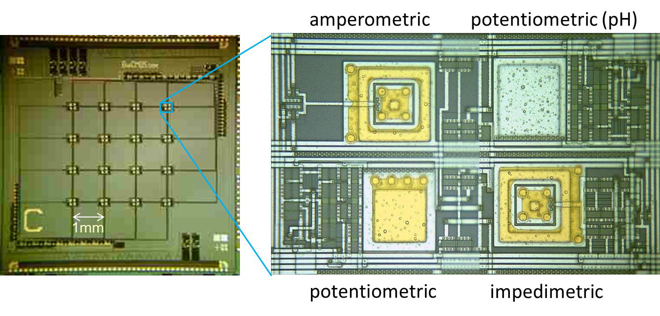
Fig 2. Electrochemical Sensors
Electrochemical biosensors are useful tools that turn biological reactions directly into electronic signals. Since the 1950s, starting with the oxygen sensor by Clark, these sensors have grown rapidly. There are three main types:
1. Potentiometric Sensors
These measure voltage between two electrodes without any current flowing. They are used for detecting specific ions (like sodium or potassium) or gases (like CO₂). pH meters are a common example. The voltage difference depends on the ion or gas concentration, and this is calculated using a special equation called the Nernst equation.
2. Amperometric Sensors
These measure current created by chemical reactions like oxidation or reduction of substances. A constant voltage is applied, and the amount of current depends on how much of the substance is present. If voltage is changed during measurement, the method is called voltammetry.
3. Impedimetric Sensors
These measure how easily electricity flows through a solution. They use AC current to detect changes in resistance and capacitance (how electricity is stored). A special method called Electrochemical Impedance Spectroscopy (EIS) is used for this. It can even detect bacteria by noticing how they change the electrical properties of the solution.
A common setup for Electrochemical Impedance Spectroscopy (EIS) includes three electrodes:
Working Electrode(WE) – where the main reaction happens.
Counter (Auxiliary) Electrode(CE) – balances the current.
Reference Electrode(RE) – provides a stable voltage.
In EIS, an alternating current (AC) is applied to the working electrode(WE), switching between positive and negative voltages. The counter electrode(CE) has an opposite voltage, while the reference electrode(RE) stays at a constant voltage to stabilize the system.
Electrochemical Impedance Spectroscopy (EIS) can detect bacteria by measuring how the electrical resistance or impedance of a solution changes when bacteria grow and release substances. This method was first described by Bard and Faulkner (2001).
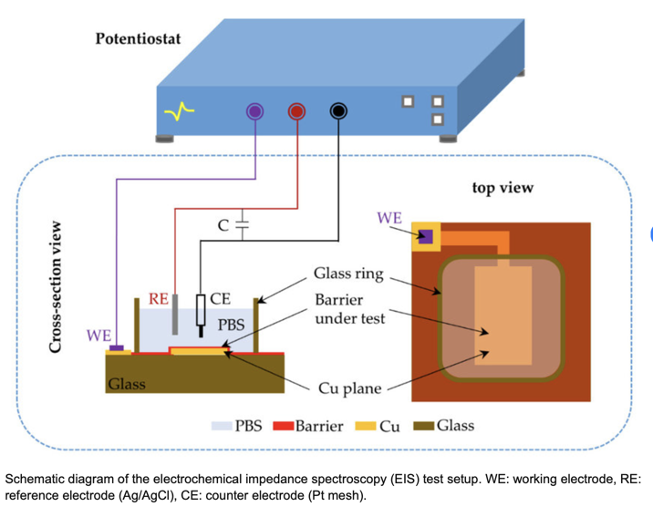
Fig 3. Shematic diagram of EIS
Fundementals of Electrochemical Impedance Spectroscopy#
Electrochemical Impedance Spectroscopy (EIS) is a useful and non-destructive method used in many areas such as:
Detecting bacteria and pathogens in food, monitoring corrosion in materials, studying the human body, detecting heavy metal ions, analyzing layers on electrode surfaces and monitoring food and dairy product quality.
EIS allows label-free detection of interactions (such as between antibodies and antigens) without any special preparation. It causes less damage to the sample compared to other methods like Cyclic Voltammetry (CV) and Differential Pulse Voltammetry (DPV).
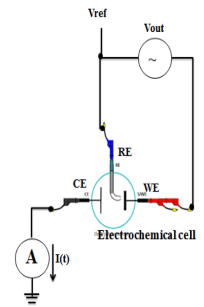
Fig 4. A three electrode measurement set up configuration for EIS
In order to further explain what is occurring in Figure 4, it should be noted that the word “spectroscopy” means studying something over a range of frequencies. In EIS, a small alternating current (AC) voltage signal(Vout) is applied to the system(as mentioned the working electrode(WE)) with changing frequencies—usually from 10 millihertz to 100 kilohertz.This is where the electrochemical reaction of interest occurs (e.g., interaction with bacteria) since this causes a small perturbation in the electrochemical system, this AC signal is key in EIS to probe the impedance of the system across different frequencies. The refrence electrode(RE) on the other hand maintains a stable and known voltage(Vref) and no current flows through it; it’s used to measure and control the potential of the working electrode accurately and monitors the exact voltage of the WE to keep it stable using a potentiostat setup (not shown here explicitly). Then the counter electrode(CE) completes the electrical circuit by allowing current to flow from the working electrode. it balances the current from the working electrode. Current flows between the WE and CE in response to the applied AC voltage. Then ammeter(A) measures the current I(t) flowing through the circuit, particularly from WE to CE over time. The current response to the AC signal is recorded and used to compute impedance:
When AC current passes through a circuit made of resistors and capacitors, it produces impedance, which is a kind of complex resistance. Impedance depends on the frequency of the signal and the parts in the system. In electrochemistry, we usually ignore inductors and only consider resistance and capacitance.By sweeping across different frequencies, you get impedance spectra that reflect the electrochemical behavior of the system.
Impedance is calculated by applying a voltage signal:
Voltage : $\( V(t) = V_m . sin(\omega t) \)$
Current : $\( I(t) = I_m . sin(\omega t + \theta) \)$
Then ampedance Z is : $\( Z = \frac {V_m . sin(\omega t)}{I_m . sin(\omega t + \theta)} \)$
This can be written in complex form: $\( Z = Re(Z) + j. Im(z) \)$
Data Presentation
Experimental results are usually shown in two ways: Nyquist plots and Bode plots.
In a Nyquist plot, the real part of impedance is on the x-axis, and the negative imaginary part is on the y-axis. Each point shows the impedance at a specific frequency.
A Bode plot uses a logarithmic frequency scale on the x-axis. It separately shows the magnitude and phase of impedance on the y-axes. Unlike Nyquist plots, Bode plots provide better frequency information.
To study the electrochemical behavior, an equivalent electrical circuit (like the Randles circuit witch you can see below) is used. This circuit includes components such as:
solution resistance(Rs): It models resistance of the electrolyte solution (e.g., ions in the liquid) This is the basic resistance of the medium (electrolyte) between the working and counter electrodes. It affects high-frequency behavior (leftmost intercept in Nyquist plot).
double-layer capacitance(Cdl): It models capacitance of the electrode/electrolyte interface. At the electrode surface, a “double layer” of charges forms (electrons on metal side, ions on solution side). It behaves like a capacitor.
Warburg impedance(Zw): It models diffusion-controlled impedance (mass transport of reactants/products). At low frequencies, ions move slowly and create diffusion-related impedance.
charge transfer resistance(Rct): It models resistance to electron transfer across the electrode/electrolyte interface. This measures how easily the redox reaction happens. Higher Rct = slower electron transfer. It controls the diameter of the semicircle in the Nyquist plot.
Constant Phase Element (CPE): It models imperfect or distributed capacitance (surface roughness, non-uniformities). Instead of a pure capacitor, real surfaces behave more irregularly — CPE generalizes capacitance to match real-world behavior better, where impedance depends on frequency non-ideally.
each representing parts of the electrochemical cell.
As we have in the Fig 5 Experiments were conducted using the CHI660D electrochemical workstation with a redox couple \([Fe(CN)_6]^{-3/-4}\) on a screen-printed electrode in a 3-electrode setup. Impedance data was collected using a 5 mV signal over frequencies ranging from 1 Hz to 100 kHz.
#Electrical equivalent Randles circuit
import schemdraw
from schemdraw import elements as e
with schemdraw.Drawing() as d:
d += e.Dot(open = True)
d += e.Resistor()
L1 = d.add(e.Line().up(1))
# d += e.Line().up(1)
d += e.Capacitor().label('Double layer\ncapacitence',fontsize=8).right(6.1)
L = d.add(e.Line().down(1))
d += e.Line().right(1)
d += e.ResistorIEC().label('Constant phase\nelement',fontsize=8)
d += e.Dot(open = True)
d += e.Line().down(1).at(L.end)
d += e.Line().left(0.1)
d += e.ResistorIEC().label('Warburg element', 'bottom', fontsize=8)
d += e.Resistor().label('Charge transfer\nresistance','bottom',fontsize=8)
d += e.Line().to(L1.start)
The results were shown using both Nyquist and Bode plots, along with the equivalent circuit diagrams to explain the system behavior as we have in Fig5.
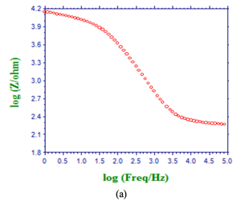 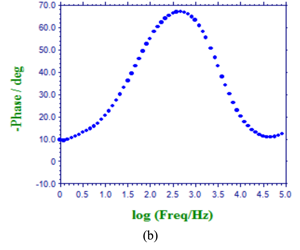 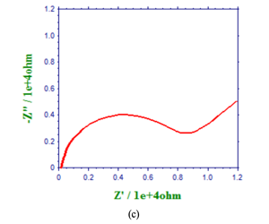
Figure 5. (a) and (b) Bode plot diagram for magnitude vs. freq. and phase vs. freq. respectively,and (c) corresponding Nyquist plot
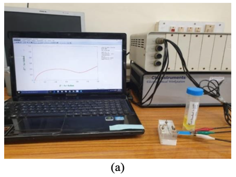 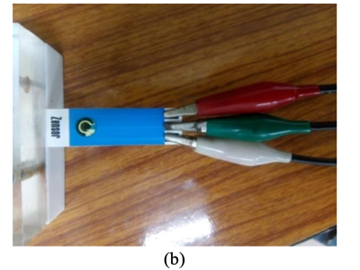
Figure 6. (a) Electrochemical workstation CHI660D from CH Instrument, Inc. (b) screen printed carbon electrode with reference (white), working (green),counter (red) electrodes.
Implementation of Impedance Spectroscopy in Biosensing#
Impedance spectroscopy (EIS) is widely used in biosensors for detecting harmful microorganisms, especially in medical diagnostics. It provides a fast, efficient, and label-free method to monitor microbial growth, using changes in electrical impedance.
Microbial Detection
Detecting bacteria like E. coli and Salmonella Typhimurium is important for human health. EIS can identify and measure bacterial growth by monitoring impedance changes in a simple two-electrode circuit. As bacteria grow, the electrical properties of the system change, which can be measured and analyzed.
Two main types of impedance measurements are used:
Non-Faradaic (no redox probe): Detects whole bacterial cells bound to the sensor surface.
Faradaic (with redox probe): Detects biological interactions (e.g. antigen-antibody binding) by observing changes in charge transfer resistance.
Early EIS biosensors used Faradaic methods with redox probes like \([Fe(CN)_6]^{-3/-4}\) For example, E. coli detection was achieved using a modified Indium Tin Oxide(ITO) chip with antibodies, showing high sensitivity and a low detection limit (LOD of \(6.0×10^3\) cells/mL).
Another example is Salmonella detection using a modified glassy carbon electrode (GCE), enhanced with gold nanoparticles, carbon nanotubes, and chitosan nanoclusters. This sensor showed a linear response for concentrations from \(10^3\) to \(10^7\) CFU/mL and a low LOD of \(5.0×10^3\) CFU/mL.
In summary, EIS is a powerful tool for sensitive, specific, and fast bacterial detection, and continues to improve with advancements in nanomaterials and sensor design.
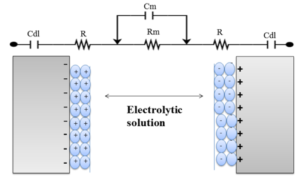
Fig 7. A simplified equivalent circuit of two electrode system in liquid electrolyte for impedance measurement.
Impedance Analysis Using IDE#
Interdigitated microelectrode arrays (IDE or IDA) offer low resistance, high signal-to-noise ratio, fast response time, and require a smaller sample volume compared to traditional electrodes. That’s why they are widely used in modern biosensing platforms.
IDE structures typically consist of two sets of comb-like electrode fingers, each containing multiple microelectrodes (as shown in Figure 6). The spacing between the “fingers” can be at the micro or nano scale. These designs enhance sensing performance and sometimes eliminate the need for surface modification.
Applications and Benefits A novel impedance-based immunosensor was developed for rapid detection of typhoid-causing bacteria using only 10 µL of sample. Gold nanoparticles (AuNPs) were used to label bacteria, enhancing signal strength and sensor selectivity. This sensor achieved a very low limit of detection (LOD) of 10² CFU/mL(The ability to detect bacteria up to 100 colony forming units(CFU) per milliliter of the sample).
Capacitive Sensors and Working Principle Some IDEs use capacitance measurement alone to detect biomolecules like DNA, proteins, etc., through antibody-antigen (Ab-Ag) interactions. These are called affinity-based capacitive biosensors.
When target molecules bind to the electrode surface, changes occur in dielectric properties, surface charge, and conductivity, which can be measured.
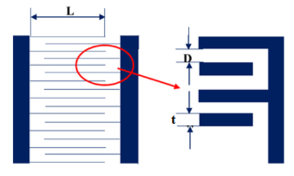
Figure 8. Dimensional representation of the simplified interdigitated electrode.
Basic capacitance formula: $\( c = \frac{A}{d} . \epsilon _0 . \epsilon_r \)$
Where:
\(A\) = area of electrode
\(d\) = distance between plates
\(\epsilon _0\) = vacuum permittivity
\(\epsilon_r\) = relative permittivity of the medium
Capacitance of an IDE sensor: $\( C_{sensor} = \eta . \frac{\epsilon . l . t}{d} \)$
Where:
\(\eta\) = number of electrode fingers
\(\epsilon\) = permittivity of the sensing layer
\(l\) = finger length
\(t\) = thickness of electrode fingers
\(d\) = gap between fingers
Recent developments in EIS: AD5933 Impedance Analyzer#
Recent developments in Electrochemical Impedance Spectroscopy (EIS) have led to the creation of more affordable, portable impedance analyzers, such as the AD5933 from Analog Devices. Traditional impedance measurement equipment, like the CHI660D or HP4194, while highly accurate, are bulky and expensive, making them impractical for small-scale or low-cost applications. The AD5933 offers a compact, cost-effective alternative suitable for medical and analytic uses.
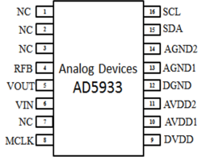
Figure 9. AD5933- pin configuration
Unlike traditional bench-top equipment that supports wide frequency ranges (40 Hz to 110 MHz), the AD5933 is designed for smaller frequency sweeps, from 10 kHz to 100 kHz. It is a 16-pin integrated circuit (IC) mounted on an evolution board, which includes a microcontroller, a frequency generator, and a 1 MSPS analog-to-digital converter (ADC). The IC operates with a 16 MHz crystal for its system clock, and it communicates with a USB microcontroller via I2C. It can analyze impedance in the range of 1 kΩ to 10 MΩ, with additional circuitry enabling measurement from 100 Ω to 1000 Ω. The AD5933 uses a 27-bit phase accumulator for precise impedance spectrum measurements, with a frequency resolution of less than 0.1 Hz. It operates on a supply voltage of 2.7 V to 5.5 V, with all ground connections linked together. This makes it an efficient and affordable solution for applications that don’t require the full capabilities of larger, more expensive impedance analyzers.
Conclusion#
Research and development in sensing technology is a popular field that combines biology and engineering. Impedance measurement is a method used to detect different biological species, and it works by using an array of electrodes. This method is easy to use and allows for simultaneous detection without needing labels or damaging the samples.
Electrochemical Impedance Spectroscopy (EIS) is a very sensitive technique that can detect molecules at very low levels. Advances in polymers and nanotechnology have made it possible to improve this method for better results. Impedance microbiology, which detects bacterial growth, is a fast and automated process that gives results in about 24 hours, much quicker than other methods. Today, impedance measurement is being applied in small, portable devices based on microchips. These devices are highly specific, sensitive, and require only small sample sizes. EIS-based portable devices could be used for low-cost, precise systems for tasks like monitoring corrosion or heavy metal ions in real time. Further work is needed to improve impedance detection and make it a successful, commercially available product.
Refrences:#
Impedimetric Sensors: Principles, Applications and Recent Trends by Nitin Kumar Sharma, Abhimanyu Nain, Kuldeep Singh, Nisha Rani, Anuj Singal
Lee Y.H, Mutharasan R. (2005), Biosensors, Sensor Technology Handbook (pp. 161-180).
Thévenot DR, Toth K, Durst RA, Wilson GS. Electrochemical biosensors: recommended definitions and classification. Analytical Letters. 2001 Mar 31;34(5):635-59.
Goudar SK, Das BB, Arya SB. Combined Effect of Marine Environment and pH on the Impedance of Reinforced Concrete Studied by Electrochemical Impedance Spectroscopy. InSustainable Construction and Building Materials 2019(pp635-649). Springer, Singapore.